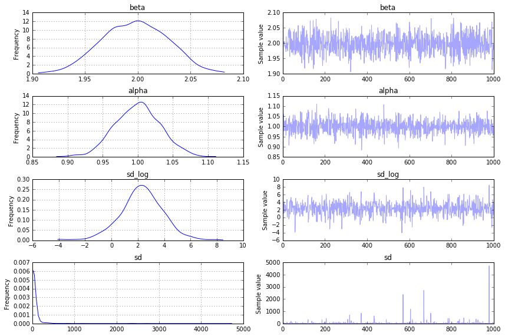
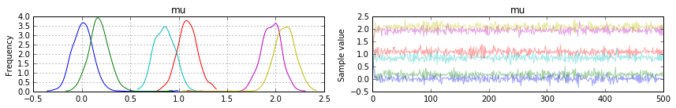

In [1]:
%matplotlib inline
import pymc3 as pm
import numpy as np
import scipy.stats as stats
cov = np.asarray([[1, 0, 0],
[0, 1, 0],
[0, 0, 1]])
rand = np.random.multivariate_normal([0, 1, 2], cov, size=(2, 100))
with pm.Model() as model:
mu = pm.Normal('mu', mu=1, sd=2, tile=(2, 3))
tau = np.stack([np.eye(3), np.eye(3)])
like = [pm.MvNormal('like%i', mu=mu[i, :], tau=tau[i, :, :], observed=rand[i, :, :]) for i in range(2)]
trace = pm.sample(500)
---------------------------------------------------------------------------
KeyboardInterrupt Traceback (most recent call last)
<ipython-input-1-addeab3e8b18> in <module>()
1 get_ipython().magic('matplotlib inline')
----> 2 import pymc3 as pm
3 import numpy as np
4 import scipy.stats as stats
5 cov = np.asarray([[1, 0, 0],
/home/wiecki/working/projects/pymc/pymc3/__init__.py in <module>()
1 __version__ = "3.0"
2
----> 3 from .core import *
4 from .distributions import *
5 from .math import *
/home/wiecki/working/projects/pymc/pymc3/core.py in <module>()
1 from .vartypes import *
----> 2 from .model import *
3 from .theanof import *
4 from .blocking import *
5 import numpy as np
/home/wiecki/working/projects/pymc/pymc3/model.py in <module>()
1 from .vartypes import *
2
----> 3 from theano import theano, tensor as t, function
4 from theano.tensor.var import TensorVariable
5
/home/wiecki/tools/theano_fork/theano/__init__.py in <module>()
74 from theano.printing import pprint, pp
75
---> 76 from theano.scan_module import scan, map, reduce, foldl, foldr, clone
77
78 from theano.updates import OrderedUpdates
/home/wiecki/tools/theano_fork/theano/scan_module/__init__.py in <module>()
38 __contact__ = "Razvan Pascanu <r.pascanu@gmail>"
39
---> 40 from theano.scan_module import scan_opt
41 from theano.scan_module.scan import scan
42 from theano.scan_module.scan_views import map, reduce, foldl, foldr
/home/wiecki/tools/theano_fork/theano/scan_module/scan_opt.py in <module>()
57
58 import theano
---> 59 from theano import tensor
60 from theano.tensor import opt, get_scalar_constant_value, Alloc, AllocEmpty
61 from theano import gof
/home/wiecki/tools/theano_fork/theano/tensor/__init__.py in <module>()
11 TensorConstantSignature, TensorConstant)
12
---> 13 from theano.tensor import opt
14 from theano.tensor import opt_uncanonicalize
15 from theano.tensor import blas
KeyboardInterrupt:
In [2]:
%pdb
Automatic pdb calling has been turned ON
In [16]:
%pdb
Automatic pdb calling has been turned ON
In [4]:
hess
Out[4]:
array([[ 2.32095607e+34, -3.47008414e+32, 3.87032186e+18],
[ -3.47008414e+32, 2.36333167e+34, 6.90887910e+17],
[ 3.87032186e+18, 6.90887910e+17, 1.16320097e+03]])
In [16]:
import pandas as pd
import numpy as np
import pymc3 as pm
X = np.random.randn(1000)
y = 2*X + 1
data = pd.DataFrame(np.vstack((X,y)).T, columns=["X","y"])
with pm.Model() as model_glm:
pm.glm.glm("y~X", data)
print("Finished GLM")
start = pm.find_MAP()
print("Finished MAP")
print(start)
#hess = pm.find_hessian(start)
start['sd_log'] = np.array(0.)
step = pm.NUTS(scaling=start, step_scale=0.01)
trace = pm.sample(1000, step, start=start)
Applied log-transform to sd and added transformed sd_log to model.
Finished GLM
Finished MAP
{'sd_log': array(-36.41287986748853), 'X': array(2.0), 'Intercept': array(1.0)}
[-----------------100%-----------------] 1000 of 1000 complete in 2.5 sec
In [20]:
import pandas as pd
import numpy as np
import pymc3 as pm
X = np.random.randn(1000)
y = 2*X + 1
with pm.Model():
beta = pm.Normal('beta', 0, 1)
alpha = pm.Normal('alpha', 0, 1)
sd = pm.HalfCauchy('sd', beta=10)
pm.Normal('obs', mu=alpha + beta*X, observed=y)
print("Finished GLM")
start = pm.find_MAP()
print("Finished MAP")
print(start)
#hess = pm.find_hessian(start)
#start['sd_log'] = np.array(0.)
step = pm.NUTS(scaling=start, step_scale=.25)
trace = pm.sample(1000, step, start=start)
Applied log-transform to sd and added transformed sd_log to model.
Finished GLM
Finished MAP
{'beta': array(1.998033627895745), 'sd_log': array(2.302585124905634), 'alpha': array(0.9990590679277936)}
[-----------------100%-----------------] 1000 of 1000 complete in 0.5 sec
In [9]:
%matplotlib inline
In [12]:
np.log(1)
Out[12]:
0.0
In [11]:
np.exp(-35)
Out[11]:
6.3051167601469892e-16
In [21]:
pm.traceplot(trace);

In [6]:
trace
Out[6]:
<MultiTrace: 1 chains, 8 iterations, 4 variables>
In [3]:
with pm.Model() as model:
mu = pm.Normal('mu', mu=1, sd=2, tile=(2, 3))
tau = np.stack([np.eye(3), np.eye(3)])
like = [pm.MvNormal('like%i', mu=mu[i, :], tau=tau[i, :, :], observed=rand[i, :, :]) for i in range(2)]
trace = pm.sample(500)
Assigned NUTS to mu
[-----------------100%-----------------] 500 of 500 complete in 0.3 sec
In [7]:
pm.traceplot(trace)
Out[7]:
array([[<matplotlib.axes._subplots.AxesSubplot object at 0x7fbcc5405cc0>,
<matplotlib.axes._subplots.AxesSubplot object at 0x7fbcc614c550>]], dtype=object)

In [2]:
with pm.Model() as model:
mu = pm.Normal('mu', mu=1, sd=2, tile=(2, 3))
tau = np.stack([np.eye(3), np.eye(3)])
like = pm.MvNormal('like', mu=mu, tau=tau, tile=2, observed=rand.reshape(100, 2, 3))
trace = pm.sample(500)
---------------------------------------------------------------------------
TypeError Traceback (most recent call last)
<ipython-input-2-d9db4a43778f> in <module>()
2 mu = pm.Normal('mu', mu=1, sd=2, tile=(2, 3))
3 tau = np.stack([np.eye(3), np.eye(3)])
----> 4 like = pm.MvNormal('like', mu=mu, tau=tau, tile=2, observed=rand.reshape(100, 2, 3))
5
6 trace = pm.sample(500)
/home/wiecki/working/projects/pymc/pymc3/distributions/distribution.py in __new__(cls, name, *args, **kwargs)
22 data = kwargs.pop('observed', None)
23 dist = cls.dist(*args, **kwargs)
---> 24 return model.Var(name, dist, data)
25 elif name is None:
26 return object.__new__(cls) #for pickle
/home/wiecki/working/projects/pymc/pymc3/model.py in Var(self, name, dist, data)
244 self.named_vars[v.name] = v
245 else:
--> 246 var = ObservedRV(name=name, data=data, distribution=dist, model=self)
247 self.observed_RVs.append(var)
248 if var.missing_values:
/home/wiecki/working/projects/pymc/pymc3/model.py in __init__(self, type, owner, index, name, data, distribution, model)
508 self.missing_values = data.missing_values
509
--> 510 self.logp_elemwiset = distribution.logp(data)
511 self.model = model
512 self.distribution = distribution
/home/wiecki/working/projects/pymc/pymc3/distributions/multivariate.py in logp(self, value)
82 k = tau.shape[0]
83
---> 84 result = k * log(2*pi) + log(1./det(tau))
85 result += (delta.dot(tau) * delta).sum(axis=delta.ndim - 1)
86 return -1/2. * result
/home/wiecki/tools/theano_fork/theano/tensor/var.py in __rtruediv__(self, other)
207
208 def __rtruediv__(self, other):
--> 209 return theano.tensor.basic.true_div(other, self)
210
211 def __rfloordiv__(self, other):
/home/wiecki/tools/theano_fork/theano/gof/op.py in __call__(self, *inputs, **kwargs)
608 for i, ins in enumerate(node.inputs):
609 try:
--> 610 storage_map[ins] = [self._get_test_value(ins)]
611 compute_map[ins] = [True]
612 except AttributeError:
/home/wiecki/tools/theano_fork/theano/gof/op.py in _get_test_value(cls, v)
536 # ensure that the test value is correct
537 try:
--> 538 ret = v.type.filter(v.tag.test_value)
539 except Exception as e:
540 # Better error message.
/home/wiecki/tools/theano_fork/theano/tensor/type.py in filter(self, data, strict, allow_downcast)
175 raise TypeError("Wrong number of dimensions: expected %s,"
176 " got %s with shape %s." % (self.ndim, data.ndim,
--> 177 data.shape))
178 if not data.flags.aligned:
179 try:
TypeError: For compute_test_value, one input test value does not have the requested type.
Backtrace when that variable is created:
File "/home/wiecki/working/projects/pymc/pymc3/distributions/multivariate.py", line 84, in logp
result = k * log(2*pi) + log(1./det(tau))
The error when converting the test value to that variable type:
Wrong number of dimensions: expected 0, got 1 with shape (2,).